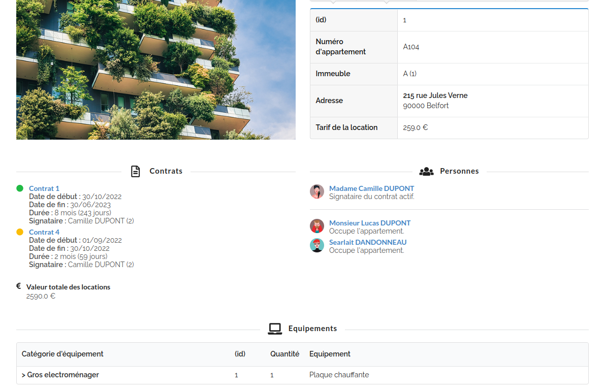

Chaque étudiant doit réaliser une interface WEB pour afficher/ajouter/modifier/supprimer une des tables du MCD.
L’évaluation, compte tenu de la diversité des sujets, portera sur :
Lacomplexité de l’interface du CRUD.
La complexité de(s) l’état(s).
La qualité du jeu de tests.
La qualité de l’interface (surtout en termes d’utilisabilité)
schéma et définition du travail de chacun ; code SQL
Une fois vos modèles réalisés (MCD et MLD ou MR) : Il faudra choisir une table pour chaque étudiant.
Cette table doit obligatoirement posséder une clé étrangère au minimum.
Cette table est définie avec l’enseignant qui suit votre travail de SAE.
Sur certains schémas, il faudra peut être modifier votre MCD pour simplifier la réalisation de l’interface
voir la partie sur la modification du schéma
Application à réaliser
Chaque étudiant doit réaliser :
Une interface web permettant d’afficher, ajouter, modifier et supprimer des données d’une des tables du MCD (“CRUD”).
Un ou plusieurs états, paramétrés ou non, en rapport avec cette table. Cet état consiste à afficher le résultat d’une requête avec une jointure.
CRUD : Create Read Update Delete
La complexité de réalisation sera prise en compte. Ne pas à choisir les tables les moins complexes pour les interfaces. Il est obligatoire de choisir une table qui possède au moins une clé étrangère .
La conception visuelle (design) ne sera que très peu évaluée. Seule l’utilisabilité de l’interface sera beaucoup prise en compte lors de l’évaluation.
Menu commun à réaliser :
Le menu doit permettre un accès facile à chaque table et chaque état, tout en indiquant l’auteur du travail.
Réalisez un menu avec les noms des tables auxquelles on peut accéder pour afficher, ajouter, modifier ou supprimer des données. Ajouter entre parenthèses le nom de l’auteur (nom de l’étudiant).
La page d’accueil doit indiquer le numéro de groupe SAE, le groupe de TP et les étudiants qui font partie du groupe.
exemple de page d’accueil et de menu
Le menu permet d’accéder rapidement au “CRUD” réalisé par un étudiant. Le menu permet également d’accéder à l’état réalisé par un étudiant en sachant qui est l’auteur du travail.
exemple de page d’accueil et de menu
Interface CRUD pour afficher, ajouter, modifier et supprimer des données dans une table
CRUD : Create, Read, Update, Delete
AFFICHAGE : Essayez d’inclure les informations les plus pertinentes dans vos requêtes et utilisez autant que possible des jointures
Exemple : Lors de l’affichage des données, vous pouvez afficher le type de chambre (avec son identifiant) ainsi que l’état de la chambre (avec son identifiant).
exemple d’affichage d’une table
Interfaces (formulaires) pour ajouter/modifier les données :
Lors de la modification d’un enregistrement, le formulaire contient la valeur de chaque champ de l’enregistrement en base de données.
Utilisez une/des liste(s) déroulante(s) pour saisir la/les valeur(s) d’une/des clé(s) étrangère(s) reliée(s) à une/des clé(s) primaire(s) (entier)
Pour l’ajout d’un enregistrement, ne proposez pas de valeur par défaut. L’utilisateur est obligé de choisir une valeur.
Pour la saisie d’une clé étrangère (entier), afficher à l’utilisateur dans les valeurs possibles de la clé étrangère , lorsque possible, un texte plus explicite issu de l’autre table pour faciliter la compréhension.
Lors de la modification d’un enregistrement, la valeur proposée par défaut doit être celle présente dans la base de données.
Dans votre jeu de test, choisissez des noms des noms qui permettent de désigner clairement un objet. Par exemple, évitez de désigner un véhicule par un numéro qui est l’identifiant de la clé primaire automatique ( Dans une flotte de véhicules, il est possible de remplacer le numéro 3 par un nouveau véhicule ayant également le numéro 3, mais qui peut être différent.)
suppression des données :
Il est souhaitable et recommandé de vérifier la possibilité de supprimer les données avant d’effectuer la suppression.
États :
Dans le contexte des bases de données, un état fait référence à une représentation figée des données stockées à un moment donné. Il s’agit d’un instantané ou d’une vue spécifique des données dans un certain état, généralement obtenu à partir d’une requête SQL de type “SELECT” exécutée sur la base de données.
Un état permet d’afficher les informations contenues dans la base de données selon certains critères spécifiés, tels que des filtres, des agrégations ou des jointures. Il peut être utilisé pour générer des rapports, des factures, des statistiques ou tout autre type de sortie qui présente les données de manière structurée et significative.
L’idée principale d’un état est de fournir une vue claire et cohérente des données à un moment précis, facilitant ainsi leur analyse, leur compréhension et leur utilisation pour des besoins spécifiques.
Une fiche de paye, une facture, un bon de livraison sont des états. Un tableau de bord de données permet d’afficher, suivre, analyser des données.
réaliser au moins un état par étudiant avec des fonctions d’agrégation et des jointures.
La note sera d’autant meilleure que les états seront complexes à réaliser :
exemple d’état “minimum” (capture d’écran d’un ancien projet)
exemple d’état très complet (capture d’écran d’un ancien projet)
paramétrage d’un état
Ces états peuvent être paramétrés. (exemples : saisir 2 dates dans un formulaire et afficher les enregistrements d’une table jointe à une autre table (avec des fonctions d’agrégation) lorsque les enregistrements sont compris entre les 2 dates saisies )
paramétrage d’un état (capture d’écran d’un ancien projet)
Remarque : les paramètres peuvent être saisis dans un formulaire indépendant.
Vous devez fournir un script SQL nommé “sql_projet.sql” qui permettra de tester votre application. Ce script SQL doit :
Supprimer toutes les tables si elles existent (attention à l’ordre, c’est l’ordre inverse de création)
Créer toutes les tables (utilisez le script de looping et modifiez, si nécessaire, les noms des colonnes).
Insérer des valeurs dans toutes les tables pour tester les interfaces que vous allez réaliser. Parfois quelques enregistrements (tuples) suffisent, mais parfois il en faudra plus.
Écrire au moins 2 ou 3 requêtes avec une ou plusieurs fonctions d’agrégation et des jointures. Le jeu de test (les instructions “insert” mentionnées ci-dessus) doit permettre de vérifier que ces requêtes fonctionnent correctement. Si vous n’avez pas encore abordé les jointures, vous devriez être capables d’en écrire quelques-unes en vous documentant sur le web.
Veuillez joindre votre MCD, nommé “mcd.loo” qui est un fichier “looping”.
Créer un fichier PDF de 2 pages (ou 2 fichier PDF d’une page chacun), ce fichier a pour nom : MCD_MLD.pdf
Page 1 : Elle doit contenir le MCD qui utilise pleinement et harmonieusement la page. Ajoutez vos noms, votre groupe de TP (par exemple A2) et votre groupe de SAE sur cette page.
Page 2 : Elle doit contenir le MLD qui utilise pleinement et harmonieusement la page. Ajouter vos noms, votre groupe de TP (par exemple A2) et votre groupe de SAE sur cette page.
ATTENTION, un malus sera appliqué si le groupe et les noms des étudiants ne figurent pas sur le MCD et le MLD
exemple de modification :
exemple de fichier PDF (format A4) avec un MCD qui sera imprimé
exemple de fichier PDF (format A4) avec un MLD qui sera imprimé
Veuillez placer votre projet dans un dossier portant le nom suivant : GROUPE_nom (votre numéro de groupe de SAE suivi du nom du référent du groupe, exemple “19_millet”).
Archiver votre projet (le nom de l’archive doit être le nom du projet) avec une extension .zip ou .tar.gz (pas de format Microsoft)
Ce dossier doit contenir les éléments suivant :
Un fichier nommé “sql_projet.sql”, qui est votre script SQL à jour pour supprimer, créer toutes les tables dans l’ordre, puis insérer les enregistrements dans le bon ordre (un jeu de test).
Un fichier nommé “mcd.loo”, qui est votre MCD à jour dessiné avec le logiciel Looping.
Votre application, comprenant un fichier “app.py”, un dossier “templates”, un dossier “static”, et éventuellement un script shell pour lancer l’application (ne pas inclure de dossier venv).
Votre application doit être fonctionnelle sur une machine de l’IUT avec la commande “python app.py” dans un environnement local où les paquets “pymysql” et “flask” sont installés.
En remplaçant le login et le motDePasse des instructions ci-dessous par votre login et mot de passe sur le serveur MySQL de l’IUT, les 3 commandes ci-dessous doivent fonctionner pour tester votre application (dans un terminal ouvert dans votre dossier de projet) :
Clé primaire composée : si la table est issue d’une relation, la clé primaire est souvent une clé composée :
La clé primaire n’est plus un entier avec un compteur (int aut_increment) mais plutôt une combinaison de clés étrangères sur d’autres clés primaires. Dans ce cas il est recommandé de modifier le schéma afin de faciliter les opérations de modification ou de suppression d’un enregistrement (voir annexe ci-dessous).
Affichage des enregistrements : Il est conseillé d’afficher en plus des clés étrangères (de type int) un autre champ de la table jointe qui soit plus explicite pour l’utilisateur. De plus, il est recommandé de trier les enregistrements en utilisant la colonne qui sera la plus utile pour l’utilisateur.
Lors de l’ajout d’un enregistrement, il faut saisir les valeurs des clés étrangères. Il est possible d’utiliser des champs “INPUT” mais il est préférable d’utiliser des listes déroulantes. Chaque liste déroulante permet de saisir les valeurs possibles de cette clé pour respecter la contrainte d’intégrité référentielle.
Il est possible d’ajouter des colonnes supplémentaires dans les tables
Annexe : aide pour réaliser un CRUD
Les associations dans les M.C.D. Merise sont souvent transformées en tables dites “table de liaison ou table de jonction” dans les MLD (à l’exception des associations binaires avec une cardinalité se terminant par 1)
Passage d’une clé primaire composée de plusieurs colonnes à une clé primaire composée d’une seule colonne.
exemple de modification :
MCD
MLD
l’objectif est de remplacer les tables issues de relation
MCD
MLD
La cardinalité 1,1 ajoute une contrainte NOT NULL sur chaque attribut (colonne) qui est une clé étrangère dans le SQL.
Il est également possible d’ajouter une contrainte d’unicité sur les clés étrangères pour garantir l’intégrité des données.
SQL pour garantir l’intégrité des données, vous pouvez appliquer une contrainte d’unicité sur les colonnes correspondant aux clés étrangères pour éviter la présence de doublons. :
Lors de la création ou de la modification d’un enregistrement, , il est recommandé de vérifier si un autre enregistrement ne possède pas les mêmes valeurs de clés étrangères (telles que num_salle, id_film, id_creneau dans l’exemple ci-dessus). Dans le cas où un autre enregistrement avec les mêmes valeurs existent déjà, il est préférable d’informer l’utilisateur et de l’inviter à saisir des informations différentes pour les clés étrangères.
Création d’un enregistrement :
Lors de la validation du formulaire, vous pouvez effectuer une requête SQL pour sélectionner les enregistrements existants ayant les mêmes valeurs de clés étrangères que celles saisies dans le formulaire. Si un enregistrement correspondant est trouvé, vous pouvez afficher un message d’erreur à l’utilisateur et rediriger vers la route appropriée pour créer cet enregistrement.
Modification d’un enregistrement :
Pour modifier un enregistrement avec un formulaire,, vous pouvez stocker la clé primaire dans un (des) champ(s) caché(s) du formulaire. Cela permet de récupérer l’identifiant unique de l’enregistrement lors de la soumission du formulaire, afin de savoir quel enregistrement doit être modifié dans la base de données.
Encodage des noms de fichiers et des noms de dossiers
Attention, pour les développeurs travaillant sur des machines avec un système d’exploitation Windows, il est important de prendre en compte les erreurs potentielles liées à l’encodage des caractères.
Lors du développement d’une application qui manipule des caractères spéciaux ou des langues non-anglaises, il est crucial de s’assurer que l’encodage des caractères est correctement géré pour éviter les problèmes d’affichage ou de traitement des données.
attention aux erreurs liées à l’encodage des caractères dans le nom des fichiers et des dossiers:
Configuration de MySql
MySql est moins “strict” par défaut sur Windows :
Alors que MySQL est sensible par défaut à la casse (au niveau des noms de base et de table)dans la plupart des distributions Unix, il ne l’est pas pour Windows! En revanche, concernant les noms de colonnes, index, alias de colonnes, déclencheurs et procédures MySQL n’est pas sensible à la casse tous systèmes confondus. En fait, tous ces noms sont stockés en minuscules dans le dictionnaire de données.
La variable lower_case_table_names permet de forcer la sensibilité à la casse pour les noms des tables et des bases de données (si elle vaut 0, la sensibilité à la casse est active et les noms sont stockés en minuscules; 1, pas de sensibilité à la casse et les noms sont stockés en minuscules; 2, pas de sensibilité à la casse et les noms sont stockés en respectant la casse). Je vous invite à positionner cette variable à 0 de manière à homogénéiser le codage et à contrôler un peu plus l’écriture de vos instructions SQL. De plus, c’est l’option par défaut sur Linux.
SELECT @@lower_case_table_names; : Cette requête retournera la valeur actuelle de la variable lower_case_table_names qui doit être à 0
Attention aussi au mode de fonctionnement de MySQL, qui peut être moins strict sur les machines individuelles par rapport aux machines de l’IUT.
Pour vérifier le mode SQL en cours d’utilisation dans votre serveur MySQL, vous pouvez exécuter la requête suivante : SELECT @@sql_mode;.
Cette requête renverra la valeur actuelle de la variable sql_mode, qui représente le mode SQL en cours d’utilisation.
Le résultat sera une chaîne de caractères contenant les différents modes SQL activés et leurs paramètres. Assurez-vous de trouver la valeur ONLY_FULL_GROUP_BY dans la chaîne de caractères renvoyée. Si ce mode n’est pas activé, cela signifie que MySQL peut être moins strict en ce qui concerne la clause GROUP BY dans vos requêtes, ce qui peut entraîner des résultats inattendus. Il est possible que votre application fonctionne correctement sur votre machine, mais rencontre des erreurs lorsqu’elle est exécutée sur une machine de l’IUT.
Dans le fichier my.ini, sous la section serveur identifiée par [mysqld], ajouter la ligne et le commentaire suivants:
Pour connaître le dossier du fichier my.cnf (Linux,MacOS) ou my.ini (Windows), exécutez la commande mysqld --help --verbose. L’information est généralement affichée au début de la sortie. Sur Linux, utilisez sudo en début de commande pour obtenir les privilèges de superutilisateur.
Vous pouvez vérifier l’encodage du serveur MySQL par défaut avec la commande SQL SHOW VARIABLES LIKE 'character_set_%';. Cette requête renvoie les variables liées à l’encodage dans MySQL, y compris la variable character_set_server qui indique l’encodage du serveur MySQL. Les dernières versions de MySQL utilisent par défaut utf8mb4 qui convient parfaitement.